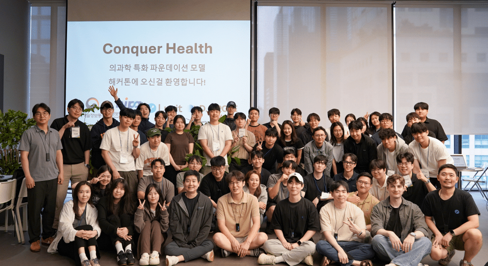
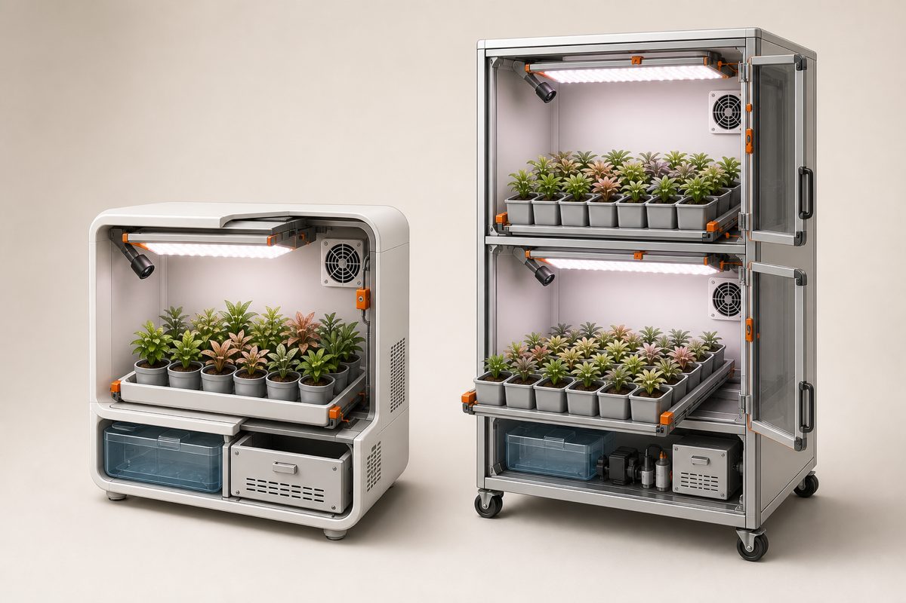

01LIVE

Radiotherapy · Patient tools
myRTdose
A stateless web service that turns a patient's DICOM-RT records into CT dose overlays, structures, DVHs, treatment summaries, and plain-language explanations.
MEDICAL PHYSICS · AI · BUILDABLE SYSTEMS
I turn radiotherapy records into patient-readable interfaces, medical imaging research into reproducible code, and product ideas into drawings and bills of materials. I publish assumptions and failure conditions alongside results.

Lunit Medical Foundation Model HackathonBenchmark Award · Team AIM · 1st place Official announcement ↗How I work
Instead of saying it works,
I show where it stops working.
I publish code, calculations, build files, and verification notes together. Anything not physically tested is labeled as such.
Three threads
Not a feed of everything I do. Three ongoing bodies of work, each grounded in experiments and evidence.
Clinical systems
Radiotherapy, dose, DICOM, treatment planning, QA, and the gap between research software and the clinic.
Explore the field notes → 02Code & prototypes
From a rough question to code, tests, CAD, BOMs, and a prototype someone else can inspect.
See how things get built → 03Ideas under pressure
Product ideas, market reality checks, failed assumptions, pricing tests, and explicit reasons to stop.
Read the experiments →Selected work
Services, browser tools, and hardware studies carried through to an actual workflow.
Radiotherapy · Patient tools
A stateless web service that turns a patient's DICOM-RT records into CT dose overlays, structures, DVHs, treatment summaries, and plain-language explanations.
Local vision · Resale
SellShot and PackCheck analyze product-photo quality and packaging changes entirely inside the browser, without uploading images to a server.

Hardware · Resale
A repeatable eight-angle photography turntable for secondhand products, including CAD, STL files, ESP32 firmware, iPhone control, and a complete BOM.

Plant tech · Fabrication
A propagation cabinet that records rooting and acclimation. The HOME 12 and PRO 48 studies include build guides, costing, CAD, and explicit safety boundaries.

Treatment planning · Monte Carlo
An open, reproducible radiotherapy planning stack spanning DICOM import, fluence optimization, MCO, MLC sequencing, virtual delivery, and independent photon, proton, and carbon Monte Carlo experiments.

Claude · Clinician-in-the-loop
A clinician-supervised planning workspace where an agent proposes, optimizes, compares, and revises research plans while every consequential step remains subject to human approval.
iPhone apps
SwiftUI applications built around cameras, QR codes, Bluetooth devices, labels, and local records.

SwiftUI · Local-first operations
An iPhone inventory, QR checkout, and return-inspection app for small rental operations. It records kit components and condition photos, prints AirPrint or ZPL labels, and stores data locally.
Swift · BLE · Camera
An iPhone controller that coordinates an ESP32 turntable, lighting, homing, weight readout, and an eight-angle product photography sequence.
Medical AI research
Public research notes on medical-image restoration, segmentation, radiotherapy, and DICOM.
About
My background is in medical physics and medical AI. I now explore local AI and buildable product systems alongside clinical software. For research collaboration, technical consulting, or prototype review, reach me through GitHub or LinkedIn.